It is well understood that almost every economic system - and more broadly, any system inherently driven by humans - is state-dependent. The sovereign package introduces a set of tools for conducting state-dependent empirical analysis, namely state-dependent forecasting, impulse response analysis, and forecast error variance decomposition. This introduction will walk through an analysis of a small macroeconomic system, including US inflation, output gap, and monetary policy. While considering two state-dependent regimes, the first based on NBER recessions, the second based on the sovereign package’s own estimation.
The vignette will proceed by 1) preparing the data, both covariates and regimes, 2) estimating forecasts, impulse responses, and forecast error variance decomposition via a VAR and a threshold VAR (that is, a state-dependent VAR), 3) estimating forecasts and impulse responses via local projections and threshold local projections, and 4) concluding.
0. Environment
Before beginning any analysis, we will explicitly load the sovereign package. This action will import all of the sovereign functions, as well as the pipe operator. Since sovereign will now be loaded into the global environment, we do not need to use declare functions from its namespace. However, we will make use of the tidyverse extensively in this vignette, so but we will explicitly call all functions from their respective packages, to ensure there is no confusion regarding the provenance of a given function.
1. Data
First, we need to download and prepare the data. We are going to study a three variable macro-system, using US inflation (p), output gap (y), and federal funds rate (ff). Further, we are going to study these three variables through two economic states: one given to us from an outside authority, NBER dated recessions, and one we will estimate ourselves using the k-means unsupervised machine learning technique.
1.1 VAR Covariates
To create our small macro-system we need to first pull four variables from FRED using the quantmod package:
1.Real Gross Domestic Product
2.Real Potential Gross Domestic Product
3.Gross Domestic Product: Implicit Price Deflator
4.Effective Federal Funds Rate
# pull data from FRED
quantmod::getSymbols.FRED(c('GDPC1','GDPPOT','GDPDEF','FEDFUNDS'), env = globalenv())## [1] "GDPC1" "GDPPOT" "GDPDEF" "FEDFUNDS"We then use these four variables to create the quarterly ouptut gap, inflation, and federal funds rate.
# real output gap and inflation
Y =
purrr::reduce(
list(
data.frame(GDPC1, date = zoo::index(GDPC1)),
data.frame(GDPPOT, date = zoo::index(GDPPOT)),
data.frame(GDPDEF, date = zoo::index(GDPDEF))
),
dplyr::inner_join, by = 'date'
) %>%
dplyr::mutate(
y = 100*((GDPC1-GDPPOT)/GDPPOT),
p = 400*(GDPDEF - dplyr::lag(GDPDEF))/dplyr::lag(GDPDEF)) %>%
dplyr::select(date, y,p)
# federal funds rate
I = data.frame(FEDFUNDS, date = zoo::index(FEDFUNDS)) %>%
dplyr::group_by(y = lubridate::year(date), q = lubridate::quarter(date)) %>%
dplyr::summarize(
date = min(date),
ff = mean(FEDFUNDS, na.rm = T)) %>%
dplyr::ungroup() %>%
dplyr::select(date, ff) %>%
data.frame()
# merge data
Data =
dplyr::inner_join(Y, I, by = 'date') %>%
dplyr::arrange(date) %>%
na.omit()
head(Data)## date y p ff
## 1 1954-07-01 -1.4139012 0.5221215 1.0300000
## 2 1954-10-01 -0.1175714 1.0977702 0.9866667
## 3 1955-01-01 2.1123368 1.8611016 1.3433333
## 4 1955-04-01 3.1059483 1.6617857 1.5000000
## 5 1955-07-01 3.8394130 2.7943570 1.9400000
## 6 1955-10-01 3.7837596 3.9873375 2.3566667Here one will notice that we have produced a Data.frame with a column named date. This specific data construction is one of four data types accepted by sovereign functions. The other three accepted data types include ts, xts, and zoo time series objects.
1.2. Regimes
Now that we have created out three covariates of interest, we need to create our desired economic regimes. First, we will use an exogenously determined regime, NBER-dated recessions and expansions.
# pull NBER recessions from FRED
quantmod::getSymbols.FRED(c('USRECQ'), env = globalenv())## [1] "USRECQ"
# merge recessions into Data
Data.rec = Data %>%
dplyr::left_join(
data.frame(USRECQ, date = zoo::index(USRECQ)),
by = 'date') %>%
dplyr::rename(cycle_position = USRECQ) %>%
dplyr::mutate(cycle_position = dplyr::case_when(cycle_position == 0 ~ 'expansion',
cycle_position == 1 ~ 'recession'))
head(Data.rec)## date y p ff cycle_position
## 1 1954-07-01 -1.4139012 0.5221215 1.0300000 expansion
## 2 1954-10-01 -0.1175714 1.0977702 0.9866667 expansion
## 3 1955-01-01 2.1123368 1.8611016 1.3433333 expansion
## 4 1955-04-01 3.1059483 1.6617857 1.5000000 expansion
## 5 1955-07-01 3.8394130 2.7943570 1.9400000 expansion
## 6 1955-10-01 3.7837596 3.9873375 2.3566667 expansionWhile a user may name their regime column anything they would like, for exposition we explicitly name our regime column, cycle_position (referring to the business cycle), and gave clear names to our economic states. We can do this because sovereign will ask us to name declare which column designates our regimes and will then assume that each unique value (numeric or string) in that column is a unique regime.
Second, we will assign two regimes via the k-means clustering algorithm.
# let sovereign determine economic states via k-means clustering
Data.kmeans =
sovereign::regimes(
data = Data,
regime.n = 2,
engine = 'kmeans')
head(Data.kmeans)## date y p ff regime
## 1 1954-07-01 -1.4139012 0.5221215 1.0300000 1
## 2 1954-10-01 -0.1175714 1.0977702 0.9866667 1
## 3 1955-01-01 2.1123368 1.8611016 1.3433333 1
## 4 1955-04-01 3.1059483 1.6617857 1.5000000 1
## 5 1955-07-01 3.8394130 2.7943570 1.9400000 1
## 6 1955-10-01 3.7837596 3.9873375 2.3566667 1Here we have used sovereign to classify each observation by using the k-means clustering algorithm. One will note that the output of the regime function is the input matrix, Data, concatenated with a new regime column with two unique numeric values (i.e. two mutually exclusive regimes).
We now have our small set of macroeconomic variables, as well as two different sets of economic regimes to introduce state-dependence.
2. VAR analysis
The first set of analysis we will conduct is a standard single regime VAR, followed by a state-dependent analysis based on NBER dated recessions.
2.1 Single-regime VAR
First we estimate the standard VAR over our macro-system and then visualize the resulting one-step ahead forecasts (left panel) and errors (right panel).
# estimate VAR
var =
sovereign::VAR(
data = Data,
p = 1,
horizon = 10,
freq = 'quarter')
# plot forecasting output, one-period ahead horizon
# plot forecasts
sovereign::plot_forecast(var$forecasts[['H_1']])
# plot residuals
sovereign::plot_error(var$residuals[['H_1']])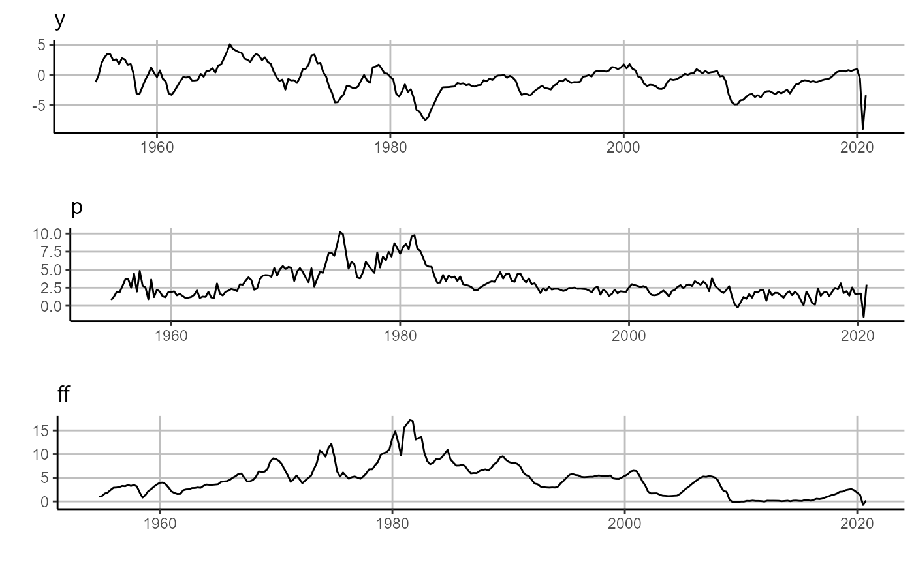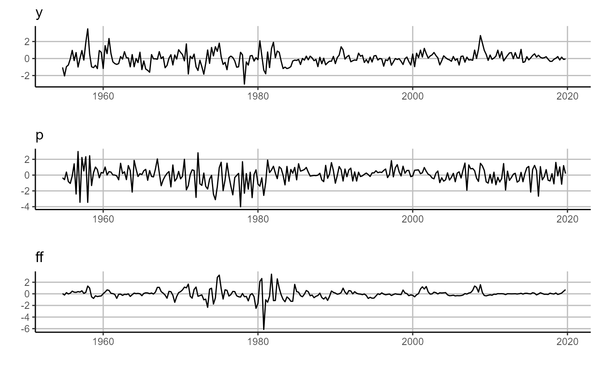
Second we estimate the associate impulse response functions, bootstrapped confidence intervals, and plot them. Additionally, here we will note that all sovereign plots are based on ggplot2, and the underlying plot objects are the return values for any sovereign plotting function.
# estimate IRF
irf =
sovereign::var_irf(
var,
bootstraps.num = 10,
CI = c(0.05,0.95))
# plot IRF
sovereign::plot_irf(irf)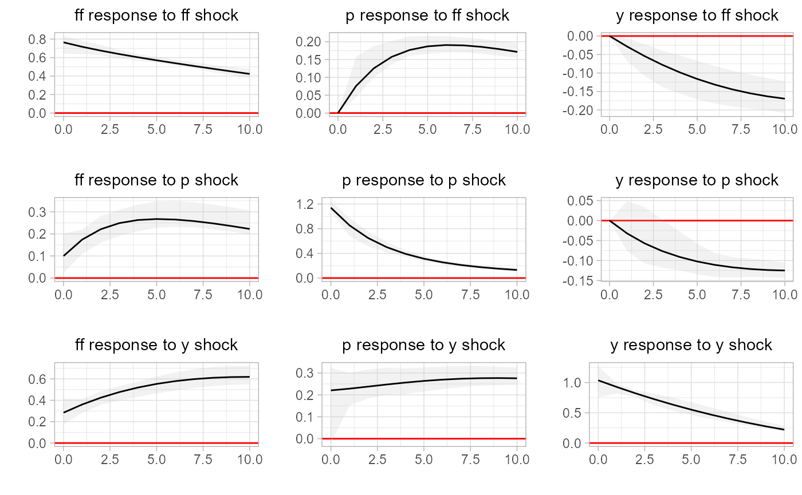
Lastly, we estimate the forecast error variance decomposition and plot the system of decomposition.
# estimate forecast error variance decomposition
fevd =
sovereign::var_fevd(
var,
horizon = 10)
# plot FEVD
sovereign::plot_fevd(fevd)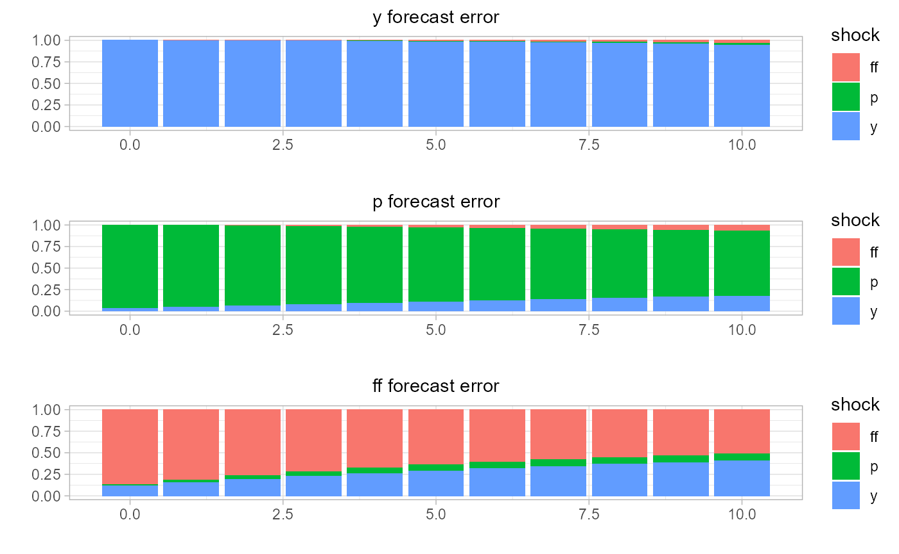
2.1 Multi-regime VAR
We next mirror the analysis conducted with the single-regime VAR, but acknowledging the two different phases to the business cycle: expansions and recessions.
First we estimate the threshold VAR, resulting in an expectation function with different parameters based on the conditioning state. That is, we will estimate one VAR per regime, and package these discrete models as one threshold_VAR object (list, not a true S3 object).
# estimate multi-regime VAR
tvar =
sovereign::threshold_VAR(
data = Data.rec,
regime = 'cycle_position',
p = 1,
horizon = 10,
freq = 'quarter')
# plot forecasting output, one-period ahead horizon
# plot forecasts (right panel)
sovereign::plot_forecast(tvar$forecasts[['H_1']])
# plot residuals (left panel)
sovereign::plot_error(tvar$residuals[['H_1']])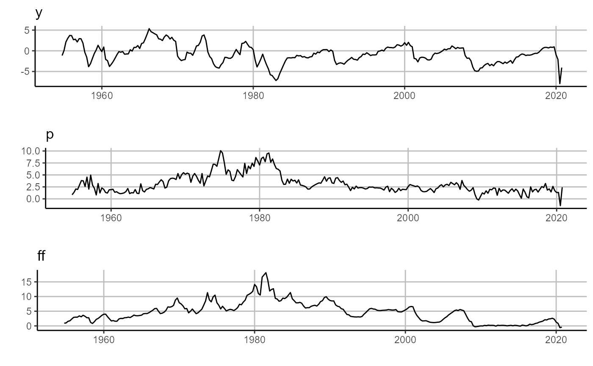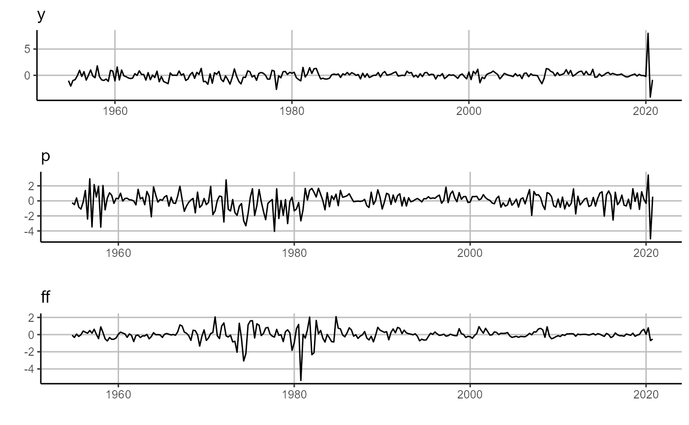 We then estimate impulse response functions to describe the dynamics of the system within each economic state.
# estimate IRF
tvar.irf =
sovereign::threshold_var_irf(
tvar,
horizon = 10,
bootstraps.num = 10,
CI = c(0.05,0.95))
# plot IRF
# regime 1: expansion (right panel)
sovereign::plot_irf(tvar.irf[['regime_expansion']])
# regime 2: recession (left panel)
sovereign::plot_irf(tvar.irf[['regime_recession']])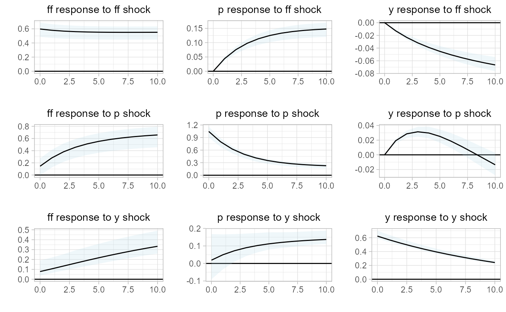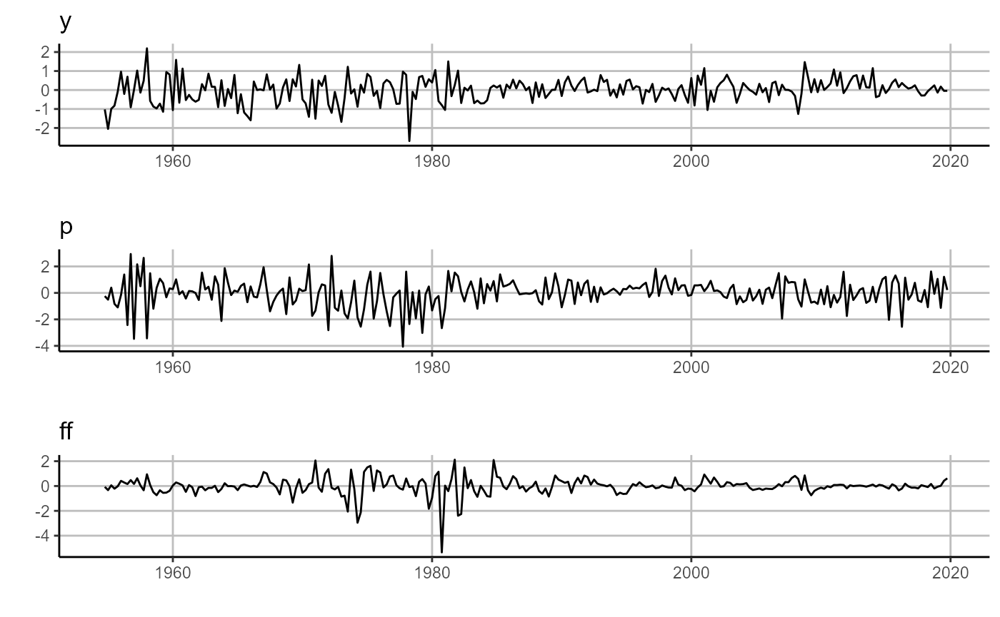
And lastly we estimate and visualize the forecast error variance decomposition by state.
# estimate forecast error variance decomposition
tvar.fevd =
sovereign::threshold_var_fevd(
tvar,
horizon = 10)
# plot FEVD
# regime 1: expansion (right panel)
sovereign::plot_fevd(tvar.fevd[['regime_expansion']])
# regime 2: recession rates (left panel)
sovereign::plot_fevd(tvar.fevd[['regime_recession']])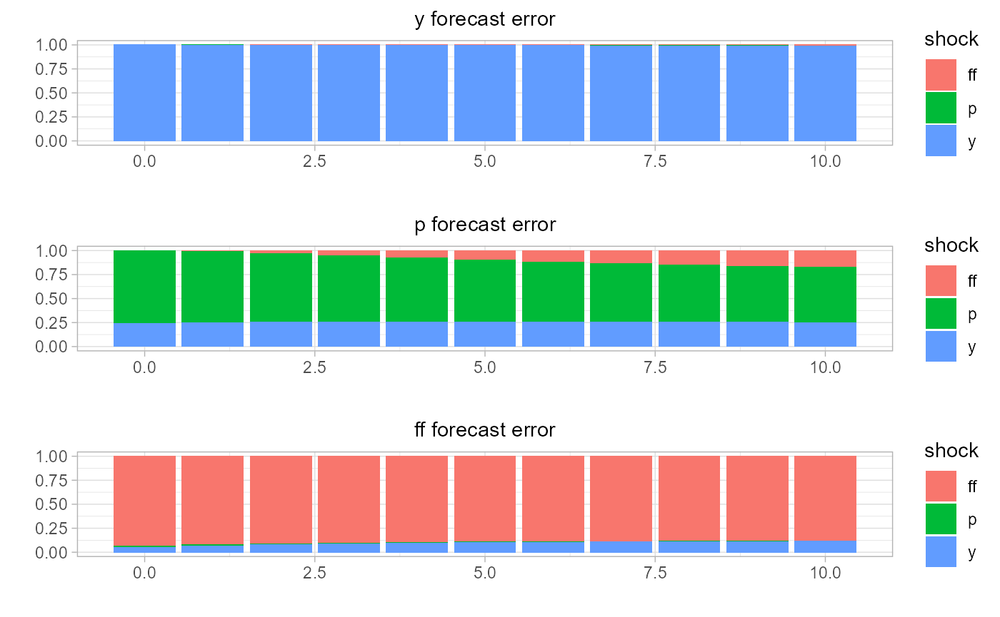 Then, upon inspection of both the impulse response functions and forecast error variance decomposition, it is clear that the macroeconomic system behaves differently based on economic state. We will next extend the analysis to assess if there is state-dependent differences in the system, when using local projections.
3. Local Projection analysis
While this section will focus on local projections, if will follow the same structure of section (2), which was based on VAR analysis. Therefore, we will first estimate and inspect single-regime VAR forecasts, errors, and impulse response functions1
3.1 Single-Regime Local Projection
# estimate single-regime forecasts
# (one or multiple horizons may be estimated)
lp =
sovereign::LP(
data = Data,
p = 1,
horizon = c(1:10),
freq = 'quarter')
# plot forecasting output, one-quarter ahead horizon
# plot forecasts (right panel)
sovereign::plot_forecast(lp$forecasts[['H_1']])
# plot residuals (left panel)
sovereign::plot_error(lp$residuals[['H_1']])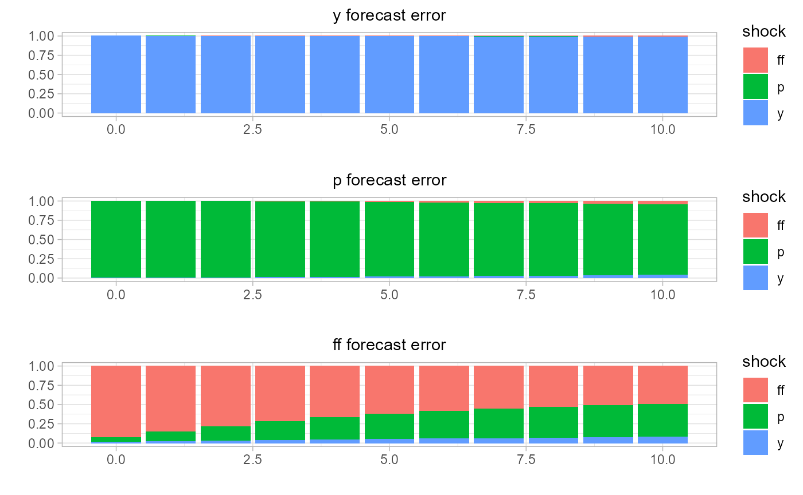
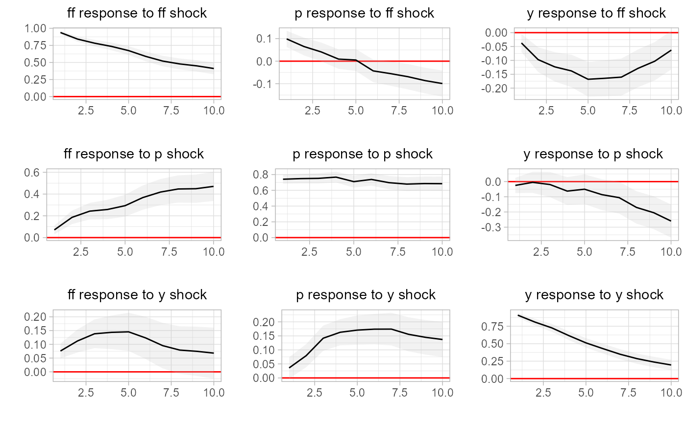
3.2 Multi-Regime Local Projection
We next turn to estimating state-dependent local projections. However, unlike our VAR experiment, we will here use sovereign’s own regime classifications, attained with the k-means clustering algorithm.
Again, we first estimate and visualize the one-period-ahead forecasts and errors.
# estimate multi-regime IRF
tlp =
sovereign::threshold_LP(
data = Data.kmeans,
regime = 'regime',
p = 1,
horizon = c(1:10),
freq = 'quarter')
# plot forecasting output, one-quarter ahead horizon
# plot forecasts (right panel)
sovereign::plot_forecast(tlp$forecasts[['H_1']])
# plot residuals (left panel)
sovereign::plot_error(tlp$residuals[['H_1']])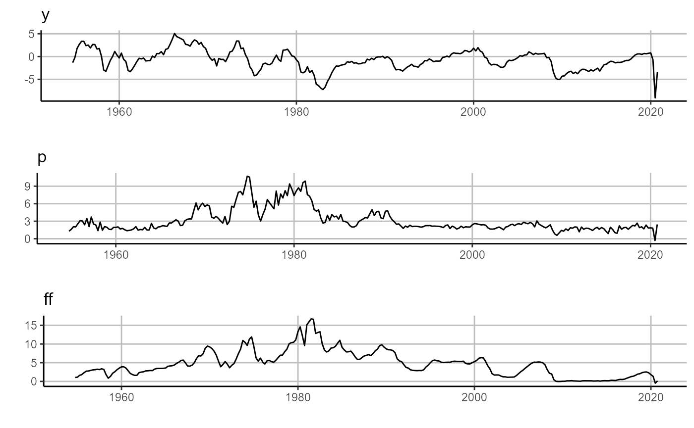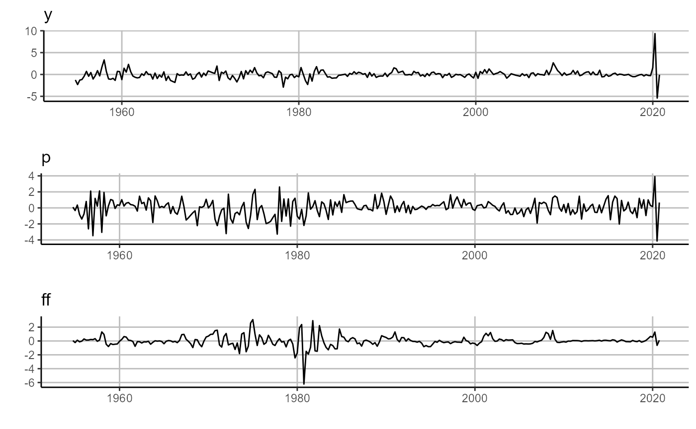
And in our last step, we will create the state-dependent impulse response functions.
# estimate multi-regime IRF
tlp.irf =
sovereign::threshold_lp_irf(tlp)
# plot IRF
# regime 1: km-eans cluster 0 (right panel)
sovereign::plot_irf(tlp.irf[[1]])
# regime 2: k-means cluster 1 (left panel)
sovereign::plot_irf(tlp.irf[[2]])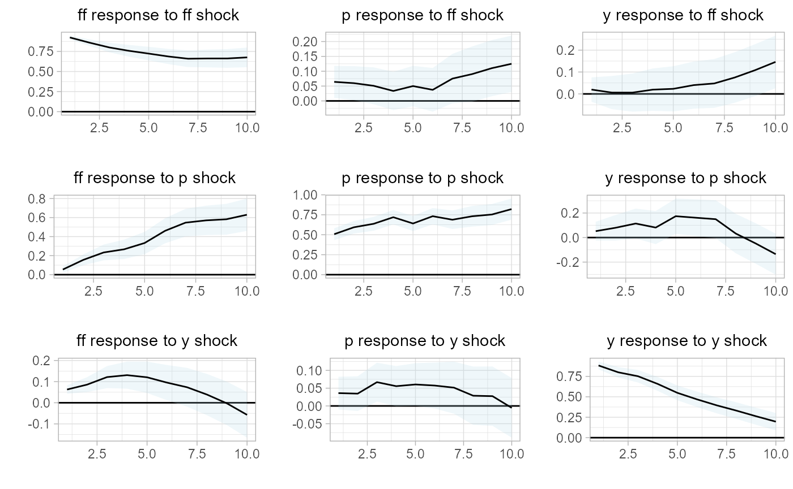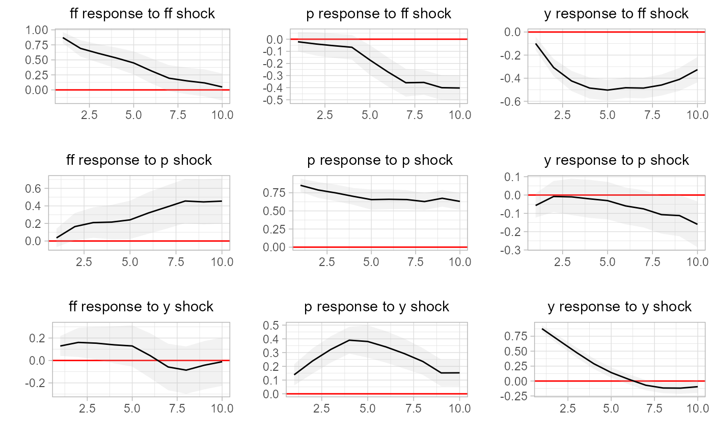
Similar to our VAR analysis, we find that our small macro-system displays different behavior within different states. That is, we have successfully modeled a small-scale macroeconomy across multiple regimes and have identified a clear state-dependence within the system.
4. Conclusion
In this short vignette, we have used a small-scale macroeconomy and two different types of economic states to demonstrate the basic sovereign package workflow. We identified how a user may use pre-define regimes, such as the NBER-dated business cycle, or use the sovereign package to classify regimes with various machine learning algorithms, as demonstrated with the k-means clustering algorithm. Moreover, we then used these economic regimes to estimate and analyze both single-state and multi-state VARs and local projections to study a small reduced-from macroeconomy. Through these state-dependent models, we were able to analyze forecasts, impulse response functions, and forecast error variance decompositions. That is, using the sovereign package, we were able succinctly and efficiently determine and visualize that our small scale representation of the US economy is in fact driven by a state-dependent process.
There is not currently a well accepted forecast error variance decomposition method for local projections, so sovereign does not include this functionality.↩︎